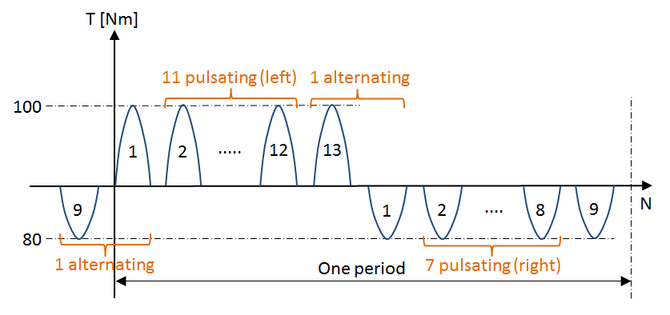

|
|
|


交变扭矩载荷谱
载荷区间也可以输入负扭矩。
问题：
迄今为止，尚未制定任何计算指南来描述如何计算具有交变载荷谱的齿轮。
唯一明确的情况是，交变扭矩的变化在每个循环中以及载荷谱的每个区间内都会发生。此时，一次载荷变化恰好对应一次双重载荷，即先施加 +扭矩，再施加 -扭矩。这种情况可以通过输入 +扭矩的载荷谱以及齿根的交替弯曲系数 YM 来正确计算。齿面也能被正确计算，因为 +扭矩始终作用于同一齿面。
相反，如果驱动装置先正转一段时间，然后反转，专家们一致认为齿根并非纯粹承受交变载荷（这可能只是发生交变载荷变化的唯一位置）。然而，关于如何在数学上评估这种情况的讨论仍在激烈进行中。更难以定义的是，对于齿根具有不相等 +扭矩和 -扭矩的混合载荷谱应如何处理。对于此类情况，齿面只考虑 +扭矩（前提是 +扭矩等于或大于 -扭矩）。
关于处理反转扭矩载荷谱的说明：
如下图所示的载荷进程（其中轮齿先几次在左齿面上受载，然后几次在右齿面上受载）可以转换为如下所示的载荷谱。此处用一个示例来说明。
载荷进程（示例）：
- 13 次载荷，左齿面上为名义载荷（100 Nm）的 100%，然后
- 9 次载荷，右齿面上为名义载荷（80 Nm）的 80%，等等。
由此得到以下过程：
- 11 次载荷循环，载荷为 100%，正扭矩，脉动；然后
- 1 次载荷循环，左侧 100% 载荷，右侧 80% 载荷；然后
- 7 次载荷循环，载荷为 80%，负扭矩，脉动；然后
- 1 次载荷循环，右侧 80% 载荷，左侧 100% 载荷；
然后从头再次重复。
这可以表示为如下的载荷谱：
| 频率 | 扭矩 | 左齿面载荷 | 右齿面载荷 |
| 11/20 = 0.55 | 100 Nm | 100% | 0% |
| 7/20 = 0.35 | 80 Nm | 0% | 100% |
| 2/20 = 0.10 | 100 Nm | 100% | 80% |
表 24.1：表示为载荷谱的载荷进程

图 24.1：载荷进程
Load spectrum with alternating torque
Load bins can also be entered with negative torques.
The problem:
until now, no calculation guidelines have been drawn up to describe how to calculate gears with alternating load spectra.
The only unambiguous case is when a change in alternating torque takes place during every cycle and in each bin of the load spectrum. At this point, a load change corresponds to exactly one double-load with +torque and then with -torque. This instance can be calculated correctly by entering the load spectrum of the +torques and the alternating bending factor YM for the tooth root. The flank is also calculated correctly, because the +torques always apply to the same flank.
If, in contrast, the drive runs forwards for a specific period of time and then runs backwards, the experts agree that the tooth root is not subjected purely to an alternating load (and possibly this is the only point at which an alternating load change takes place). However, discussions are still raging as to how this case can be evaluated mathematically. It is even more difficult to define how mixed load spectra with unequal +torques and -torques for the tooth root are to be handled. For this type of case, only the +torques are considered for the flank (with the prerequisite that the +torques are equal to, or greater than, the -torques).
Note about handling load spectra with reversing torque:
A load progression as represented in the figure below, where the tooth is subjected to a load a few times on the left flank, and then a few times on the right flank, can be converted into a load spectrum as shown below. This is represented in an example here.
Load progression (example):
- 13 loads with 100% of the nominal load (100 Nm) on the left flank, then
- 9 loads with 80% of the nominal load (80 Nm) on the right flank, etc.
This results in the following process:
- 11 load cycles with 100% load, positive torque, pulsating; then
- 1 load cycle with 100% load on the left and 80% load on the right; then
- 7 load cycles with 80% load, negative torque, pulsating; then
- 1 load cycle with 80% load on the right and 100% load on the left;
then repeated again from the start.
This can be represented as a load spectrum as follows:
| Frequency | torque | Left flank load | Right flank load |
| 11/20 = 0.55 | 100 Nm | 100% | 0% |
| 7/20 = 0.35 | 80 Nm | 0% | 100% |
| 2/20 = 0.10 | 100 Nm | 100% | 80% |
Table 24.1: Load progression shown as a load spectrum
Figure 24.1: Load progression